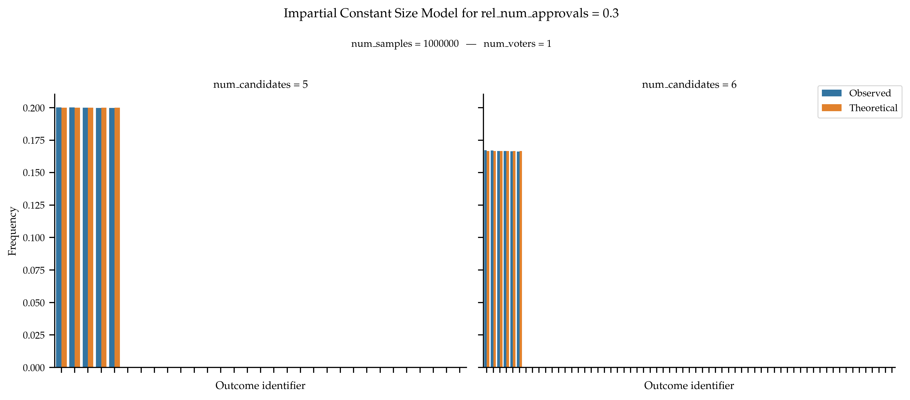

Impartial Cultures#
Impartial cultures are statistical cultures in which all outcomes are equally likely to be generated.
- impartial(num_voters: int, num_candidates: int, p: float | Iterable[float], seed: int = None) list[set][source]#
Generates approval votes from impartial culture.
Under the approval culture, when generating a single vote, each candidate has the same probability
pof being approved. This models ensures that the average number of approved candidate per voter is p * num_candidate.A collection of num_voters vote is generated independently and identically following the process described above.
See
impartial_constant_size()for a version in which all voters approve of the same number of candidates.- Parameters:
num_voters (int) – Number of Voters.
num_candidates (int) – Number of Candidates.
p (float | Iterable[float]) – Probability of approving of any given candidates. If a sequence is passed, there is one such probability per voter.
seed (int, default:
None) – Seed for numpy random number generator.
- Returns:
Approval votes.
- Return type:
list[set]
Examples
Use a global
pfor all votersfrom prefsampling.approval import impartial # Sample from an impartial culture with 2 voters and 3 candidates where # a candidate is approved with 60% probability. impartial(2, 3, 0.6) # For reproducibility, you can set the seed. impartial(2, 3, 0.6, seed=1002) # Parameter p needs to be in [0, 1] try: impartial(2, 3, 1.6) except ValueError: pass try: impartial(2, 3, -0.6) except ValueError: pass
Use an individual
pper voterfrom prefsampling.approval import impartial # Sample from an impartial culture with 2 voters and 3 candidates with # p=0.6 for the first voter and p=0.2 for the second. impartial(2, 3, [0.6, 0.2]) # For reproducibility, you can set the seed. impartial(2, 3, [0.6, 0.2], seed=1002) # There need to be one p per voter (and no more) try: impartial(2, 3, [0.6, 0.2, 0.9]) except ValueError: pass try: impartial(2, 3, [0.6]) except ValueError: pass # All individual p's need to be in [0, 1] try: impartial(2, 3, [0.6, -0.2]) except ValueError: pass try: impartial(2, 3, [1.6, 0.2]) except ValueError: pass
Validation
We only validate the model with a single voter thus the distinction between individual and global does not matter here. Call
 the probability of approving any candidate,
then the probability of generating a given approval ballot of size
the probability of approving any candidate,
then the probability of generating a given approval ballot of size  is
is
 , where
, where  is the number of candidates.
is the number of candidates.References
An Experimental View on Committees Providing Justified Representation, Robert Bredereck, Piotr Faliszewski, Andrzej Kaczmarczyk and Rolf Niedermeier, Proceedings of the International Joint Conference on Artificial Intelligence, 2019.
How to Sample Approval Elections?, Stanisław Szufa, Piotr Faliszewski, Łukasz Janeczko, Martin Lackner, Arkadii Slinko, Krzysztof Sornat and Nimrod Talmon, Proceedings of the International Joint Conference on Artificial Intelligence, 2022.
Price of Fairness in Budget Division and Probabilistic Social Choice, * Marcin Michorzewski, Dominik Peters and Piotr Skowron*, Proceedings of the AAAI Conference on Artificial Intelligence, 2020.
{kind=link}
{kind=link}
{kind=link}
- impartial_constant_size(num_voters: int, num_candidates: int, rel_num_approvals: float | Iterable[float], seed: int = None) list[set][source]#
Generates approval votes from impartial culture with constant size.
Under this culture, all ballots are of size ⌊rel_num_approvals * num_candidates⌋. The ballot is selected uniformly at random over all ballots of size ⌊rel_num_approvals * num_candidates⌋.
A collection of num_voters vote is generated independently and identically following the process described above.
See
impartial()for a version in the probability of approving any candidate is constant and independent.- Parameters:
num_voters (int) – Number of Voters.
num_candidates (int) – Number of Candidates.
rel_num_approvals (float | Iterable[float]) – Proportion of approved candidates in a ballot. If a sequence is passed, there is one such proportion per voter.
seed (int, default:
None) – Seed for numpy random number generator.
- Returns:
Approval votes.
- Return type:
list[set]
Examples
Use a global
rel_num_approvalsfor all votersfrom prefsampling.approval import impartial_constant_size # Sample from an impartial culture with 2 voters and 3 candidates where # all voters approve of 60% of the candidates (in this case 1). impartial_constant_size(2, 3, 0.6) # For reproducibility, you can set the seed. impartial_constant_size(2, 3, 0.6, seed=1002) # Parameter rel_num_approvals needs to be in [0, 1] try: impartial_constant_size(2, 3, 1.6) except ValueError: pass try: impartial_constant_size(2, 3, -0.6) except ValueError: pass
Use an individual
rel_num_approvalsper voterfrom prefsampling.approval import impartial_constant_size # Sample from a constant size impartial culture with 2 voters and 3 candidates with # p=0.6 for the first voter and p=0.2 for the second. impartial_constant_size(2, 3, [0.6, 0.2]) # For reproducibility, you can set the seed. impartial_constant_size(2, 3, [0.6, 0.2], seed=1002) # There need to be one rel_num_approvals per voter (and no more) try: impartial_constant_size(2, 3, [0.6, 0.2, 0.9]) except ValueError: pass try: impartial_constant_size(2, 3, [0.6]) except ValueError: pass # All individual rel_num_approvals' need to be in [0, 1] try: impartial_constant_size(2, 3, [0.6, -0.2]) except ValueError: pass try: impartial_constant_size(2, 3, [1.6, 0.2]) except ValueError: pass
Validation
We only validate the model with a single voter thus the distinction between individual and global does not matter here. For a given value of
rel_num_approvals, let be the size of the
approval ballots. Then, the probability of generating a given approval ballot of size
is 0 if
be the size of the
approval ballots. Then, the probability of generating a given approval ballot of size
is 0 if  , and
, and  otherwise,
where is the number of candidates.
otherwise,
where is the number of candidates.References
A Quantitative Analysis of Multi-Winner Rules, Martin Lackner and Piotr Skowron, Proceedings of the International Joint Conference on Artificial Intelligence, 2019.
{kind=link}
{kind=link}
{kind=link}